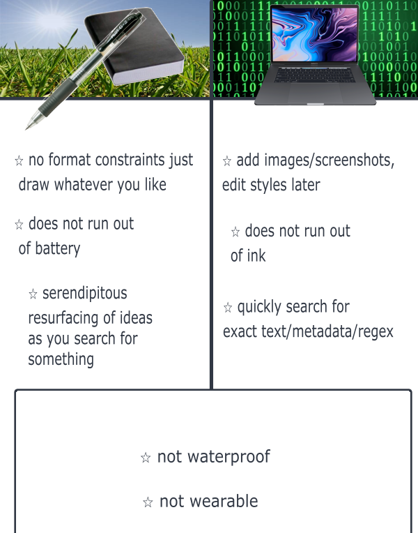

shower thought
"I had a thought which one could only have in the shower in the shower" is a thought which one could only have in the shower that I had in the shower this morning, but I can't recall the specific thought thought causing such a reflective shower thought.
It is common for me to have the sensation of certainty that at some recent point in the past (at most, the previous day), I had a really useful insight or exciting idea or bizarre dream, but cannot remember its actual content. this is extremely frustrating, like knowing something valuable lies behind a locked door and I only lack the key. These ideas pop up at times when it is difficult to make a note of them, e.g. while in the shower, running, driving.
The brain is for having ideas, not storing them. But in these situations where you can't get a thought crystallized in some external medium, it may help to have a little extra RAM so the idea can survive long enough to make it into the second brain!!
My second brain consists of a notebook and a black G2 0.38mm pen (impractical for running and showering). however, there are many options, like Apple Notes, Notion, and other Computer Applications. a bit of consideration has gone into the choice of format, as there are strong pros and cons...
Neither option solves the problem of capturing the best ideas, those that come along when the brain is in its foggiest, most creative state. There is no solution to this besides having better memory and focus so that you can remember later, equipped with a recording medium. the best idea-having states are the least conscientious...
My approach is just to record as much as possible, even if a thought is incomplete. Being able to go back and get at least a hint of the state of the brain is a powerful tool for making connections.